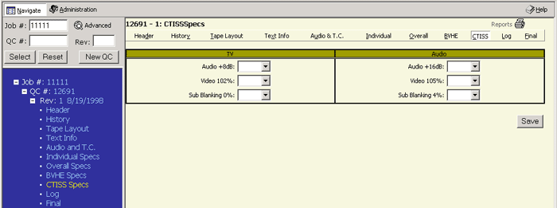

Alt+c then ENTER will take you to this page or clicking on CTISS in the menu bar on the right side. You can also click on the word CTISS SPECS in the Tree Frame (blue area) as in example 1A.

A number of fields include pull down menus with predetermined choices. A user can input information for the following:
| TV | Audio | ||
|
|
After entering the information please click the SAVE button to save your data.